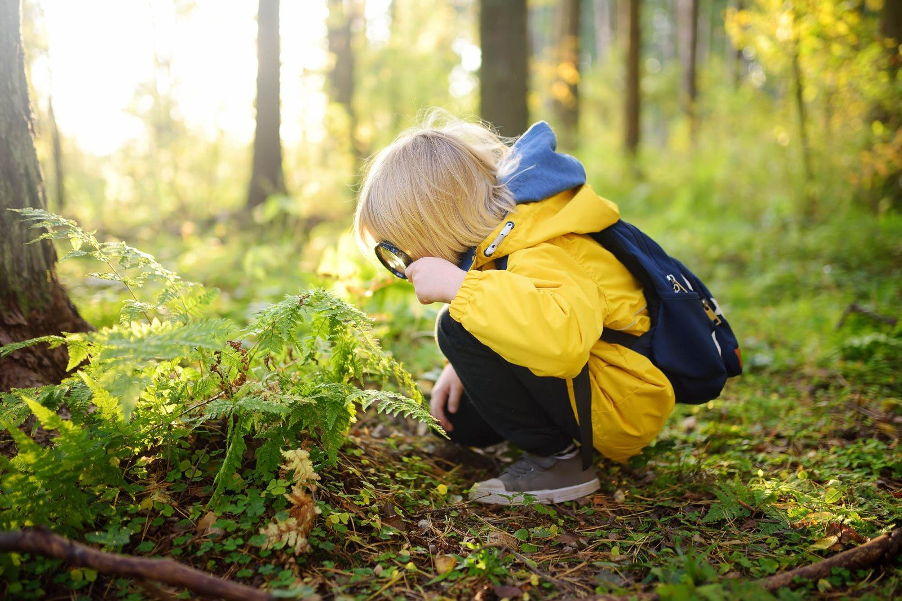

Utredning

Hur går en utredning till?
Som underlag för utredning tar vi emot remisser men man kan även ta själv kontakt för att få starta en privatfinansierad utredning.
En NP-utredning består av psykologutredning, läkarbedömning samt sambedömning psykolog-läkare.
Under psykologutredningen får föräldrar och barn/ungdom eller vuxen fylla i skattningsformulär och man genomgår en psykologtestning som väljs ut utifrån frågeställning och ålder. Psykologen tar även ibland kontakt med pedagog på skolan för att få ytterligare information.
Under utredning av vuxen person görs intervju om möjligt med förälder eller annan närstående person som kan berätta om barndom/tidig tid.
Det ingår alltid en begåvningstestning om det inte redan har gjorts en sådan under de senaste två åren. Testningstillfället ger även en bra möjlighet att observera hur barnet/ungdomen eller vuxen agerar i olika situationer tex under tidspress. Antal träffar/besök anpassas efter behov och förmåga.
Under mötet med läkaren görs somatisk och neurologisk undersökning och läkaren ställer då frågor till patient/klient och föräldrar/anhörig. Läkaren kan rekommendera blodprovstagning för att utesluta somatiska orsaker till eventuella symtom som personen kan ha drabbas av. Vid information/misstanke om drogbruk kommer drogtestning krävas.
Psykolog och läkare gör därefter en sambedömning och eventuella diagnoser fastställs.
Då utredningen är färdigskriven får familjen möjlighet att granska utlåtandet så inga missförstånd finns. I utredningen finns rekommendationer till familjen, skolan och BUP/VUP. Utredande psykolog gör även en återkoppling av resultat till patient/klient, familj och vid önskemål även till skola.
Utifrån familjens önskemål kan utredningen och remiss skickas vidare till BUP/VUP på hemorten för övertagande.